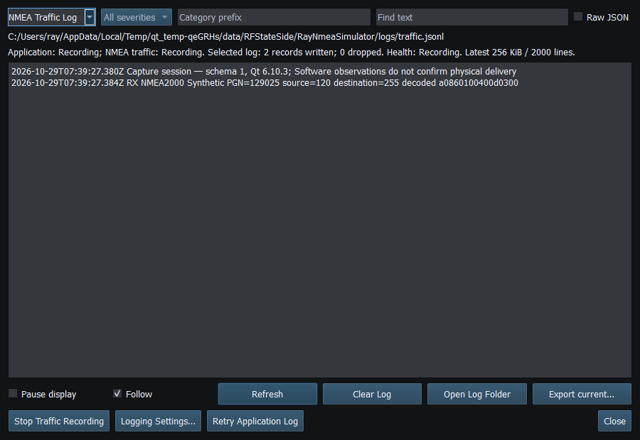

Figure 90. Traffic Recording is Off by default and is independent of the on-screen NMEA viewer. Click to enlarge.
NMEA Traffic Recording is disabled by default, session-controlled and separate from the Application Log and NMEA viewer. Turning it off stops new traffic records without restarting. It does not stop reception or revoke Sending by itself.
Records include timestamps, direction, protocol and transport/source details. NMEA2000 records describe logical messages; NMEA0183 records describe sentences. Outgoing records show submissions, so check the receiver to confirm delivery. Recording does not capture every raw outgoing CAN frame.
Traffic has its own bounded asynchronous queue, current file and rotation budget. Default 8 MiB per file with four archives gives bounded retention, not an unlimited capture. Sustained load or disk failures can drop/stop recording; review health counters and error messages. Pausing the display reduces UI churn but does not disable the recorder.
Records can expose vessel NAME/MMSI, positions, routes, waypoint names and private endpoints. Secrets are excluded/redacted where known; this is not a guarantee that arbitrary user-entered text contains no sensitive information. Review before exporting. Clear affects only the selected current channel, including while paused; it does not purge existing archives.
Figure 90. Traffic Recording is Off by default and is independent of the on-screen NMEA viewer. Click to enlarge.

Figure 91. Traffic Recording stores incoming and outgoing messages independently of display refresh. Click to enlarge.
Application Log · Error Messages · Troubleshooting · Known Limitations · Connection Troubleshooting · Enable, Dispatch and Sending · Route Overview · Engineering Units